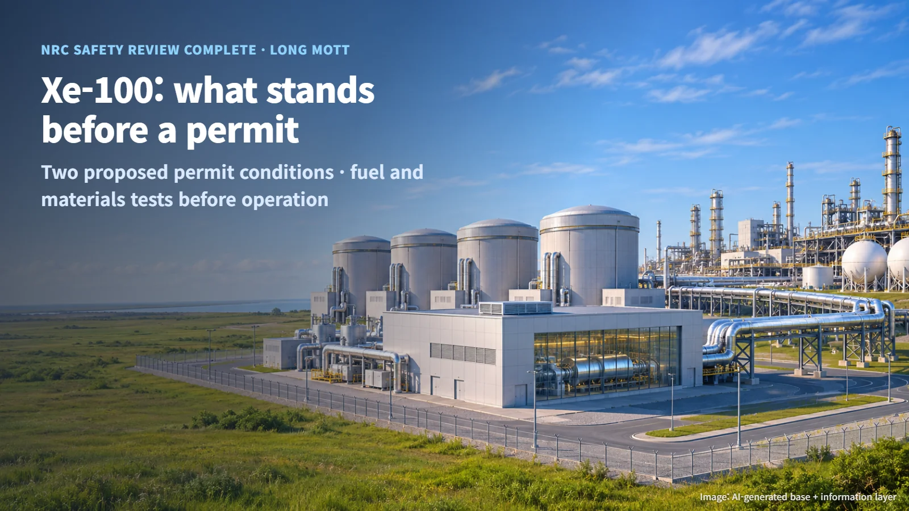
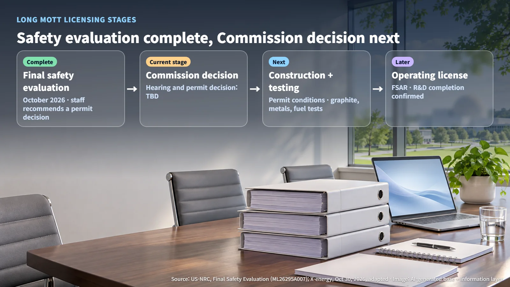
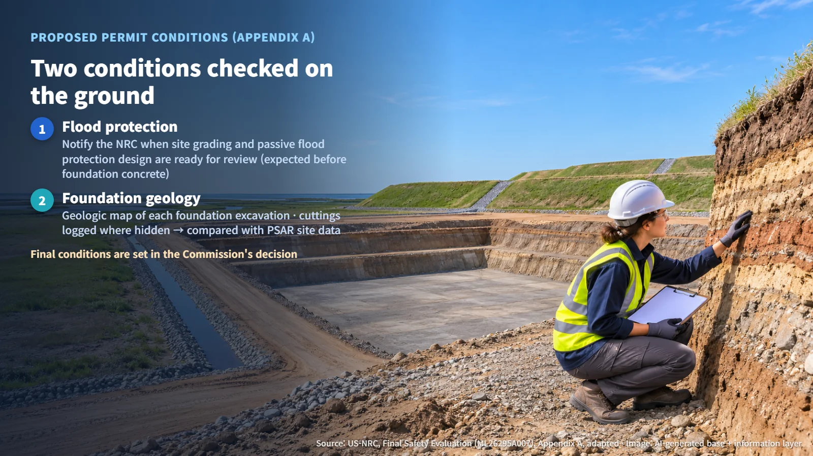
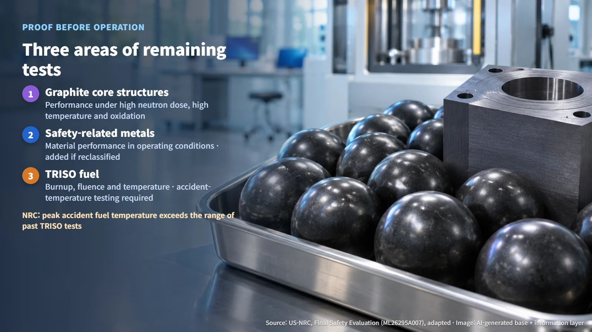

United States · SMR
The NRC Has Finished Its Xe-100 Safety Review. What Stands Between Long Mott and a Construction Permit?
The NRC has completed its safety evaluation for the four-unit Xe-100 plant at Long Mott, Texas; the Commission's permit decision, two on-site conditions and pre-operation tests remain.
When a headline says a reactor has "completed its safety review," it is natural to picture bulldozers arriving the following week. On October 30, 2026, X-energy announced that the U.S. Nuclear Regulatory Commission (NRC) had completed its final safety evaluation for the Long Mott plant in Calhoun County, Texas. That is a major milestone, and it also opens a new set of steps. Let's look at where the project stands today and what remains on the list.

Safety Review Complete; Next Comes the Commission's Permit Decision
The NRC staff reviewed a construction permit application filed under 10 CFR Part 50, covering material submitted through September 2026. Based on the preliminary design, the staff concluded there is reasonable assurance that the final design will meet the design criteria with adequate safety margins, and it recommended that the Commission make a permit decision. According to the developer's announcement, the Advisory Committee on Reactor Safeguards (ACRS) also supported issuing the permit.
The environmental side was settled earlier. In May 2026, the NRC completed an environmental assessment and a Finding of No Significant Impact (FONSI). With both major tracks, environmental and safety, now finished, the project has entered the final stage of construction permit review. The NRC project schedule updated on September 14 lists the hearing and the construction permit decision as "TBD." The permit issuance date and the final permit conditions have not been published.
So the current stage is precise: safety evaluation complete, Commission permit decision pending. The document that unlocks construction is the Commission's decision.

A Construction Permit Reviews the Preliminary Design
At the construction permit stage, the NRC examines the Preliminary Safety Analysis Report (PSAR), which lays out the principal design criteria, accident analyses, site conditions and safety programs. Think of building a house: the framing plan and safety principles are approved first, while detailed design and test results come later in the Final Safety Analysis Report (FSAR). Whether the research and development work has been properly completed is something the NRC confirms when the operating license application is reviewed. Long Mott did not request separate approval of specific design features under 10 CFR 50.35(b), so this evaluation feeds directly into the construction permit decision for this particular project.
The safety analysis uses a risk-informed method that links event selection, equipment classification and defense-in-depth evaluation. As the design matures, events are added to the probabilistic risk assessment (PRA), a structured way of weighing how often an accident could happen and what its consequences would be.
It helps to put the plant's size in numbers. Long Mott is planned as four Xe-100 high-temperature gas-cooled reactors (reactors that carry heat with gas and use graphite as the core structural material), with a combined rating of 800 MWt and 320 MWe.
- Thermal output per module: 800 MWt ÷ 4 units = 200 MWt
- Electrical output per module: 320 MWe ÷ 4 units = 80 MWe
- Share of heat converted to electricity: 320 ÷ 800, which comes to about 40%
The project plans to supply both electricity and process steam to the adjacent Dow Seadrift industrial site. That makes it an industrial nuclear plant whose heat is put to work in two streams, power and steam.
Two Conditions That Check the Ground and the Water on Site
Appendix A of the safety evaluation contains two proposed permit conditions.
The first covers flood protection. The licensee must notify the NRC when the site grading and passive flood protection design are ready for NRC review, which is expected before the pouring of safety-significant foundation concrete. The protected equipment includes safety-related structures, systems and components, plus certain specially treated non-safety-related equipment that must keep functioning during and after a design-basis flood. If the grading work or protective features affect the inputs or assumptions of the flood analysis, the design and the analysis must be kept consistent.
The second covers foundation geology. Geologic maps must be prepared for each foundation excavation of safety-related structures. For deep foundations, exposed areas that can be safely accessed are examined, and where slurry or temporary casing hides the excavation walls, geologic records are made from the excavated soil. The site geology confirmed this way is then evaluated against the site characteristics in the PSAR, and the NRC is notified when the records are ready.
Both conditions take site characteristics that were predicted on paper and verify them physically as the ground is opened and structures go up. Picture a geologist logging the exposed soil wall beside an excavator: that is exactly the verification these conditions describe. The final conditions will be set in the Commission's decision.

Tests to Finish Before an Operating License, and the Next Xe-100 Sites
If the on-site checks are homework for the construction phase, the materials and fuel tests are proof that must be completed before operation.
- Graphite core structures: performance under high neutron fluence, high temperature and oxidizing conditions. The NRC accepted the plan to resolve this through testing in representative Xe-100 environments before construction is complete.
- Safety-related metallic components: material performance in the operating environment. If open questions arise for components reclassified through risk evaluation, they are added to the development program.
- TRISO fuel (particle fuel in which a uranium kernel is wrapped in several ceramic layers): gaps in validation across burnup, fast neutron fluence and temperature ranges are being filled through irradiation testing such as XPeRT, to confirm how well the fuel retains fission products.
The NRC noted that the peak fuel temperature for the limiting design-basis accident in the preliminary design exceeds the range typically covered by previous TRISO testing. As a result, fuel testing at temperatures that include Xe-100 accident conditions and their uncertainties has become a required step. The peak temperature value has not been published. The NRC also confirmed during an audit the developer's statement that tests outside the formal R&D list will be carried out if they are needed for safety.

X-energy describes this review as a precedent that can support efficient licensing of follow-on projects, while stating that each future application will be reviewed on its own. The safety analysis methodology and the scope of fuel and materials testing can be reused as common groundwork, while each new site's flood factors, grading design and excavation geology data will be evaluated fresh. The Indiana SMR project covered on this blog on October 19 uses the same Xe-100 reactor design.
Long Mott now stands at three parallel paths: the Commission's decision, carrying out the on-site conditions, and closing out the fuel and materials tests. Following when each one is completed shows, step by step, how a new reactor moves from paperwork to a working power plant.